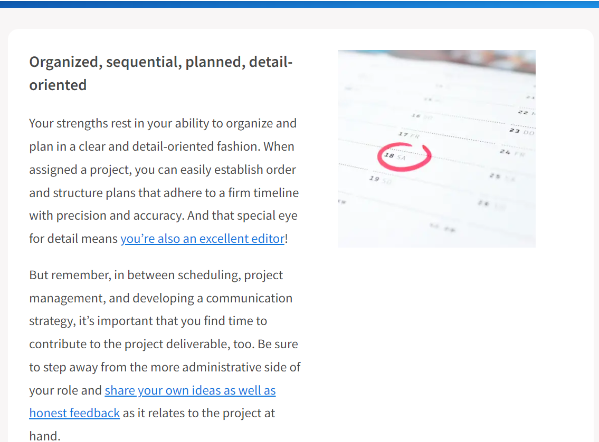
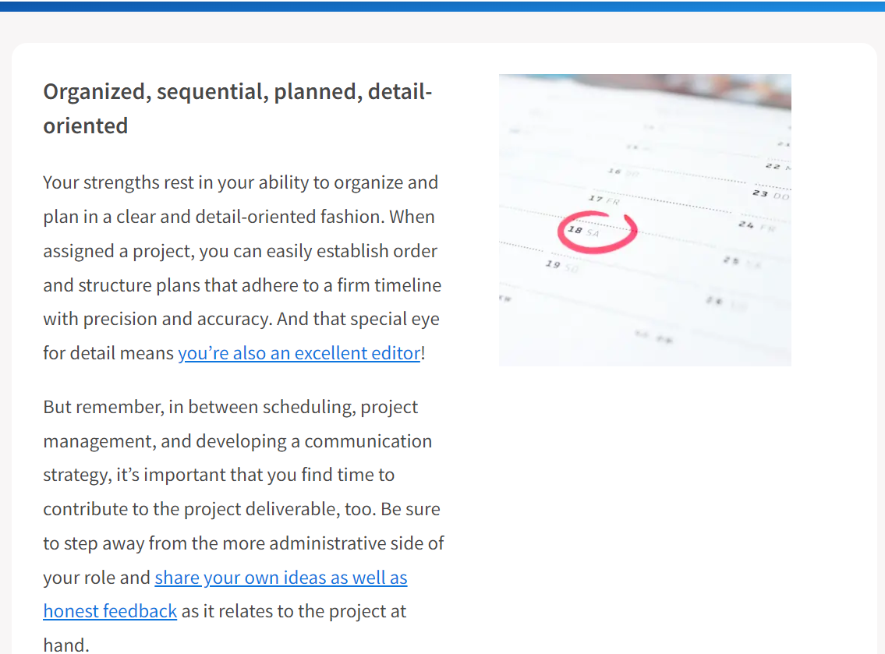
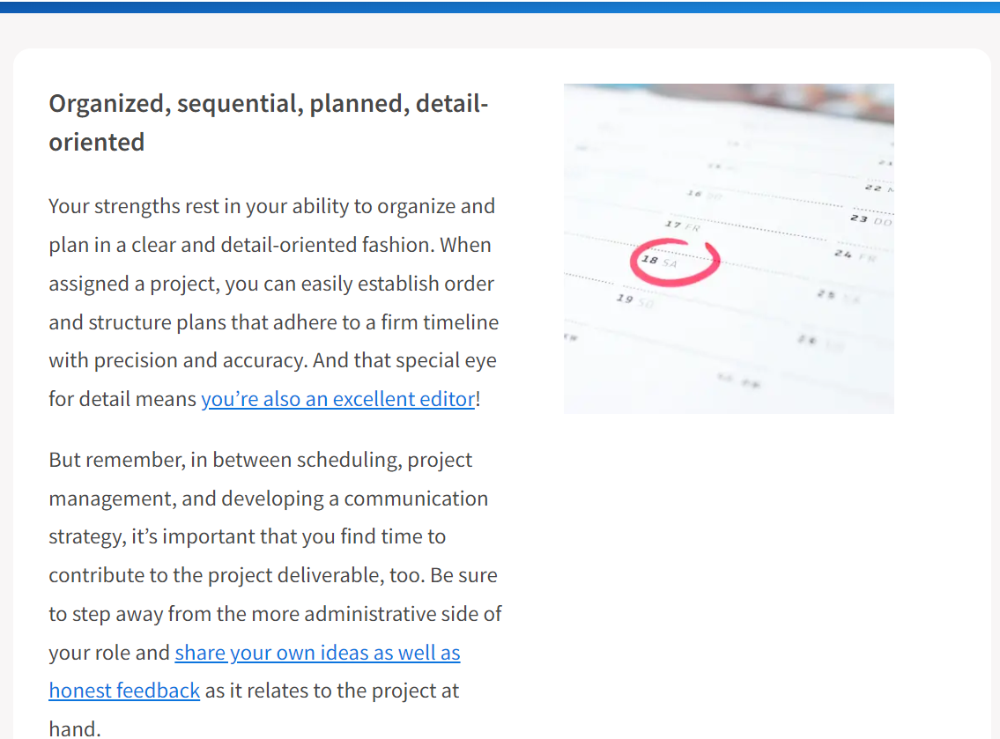

Important Note - Marc had left the team during the final week and had decided to remove all
of his content and Daryl has done next to nothing during this entire assessment, only doing around
2%. Because of this, we are unable to show their profiles and career goals.
We are a dynamic team; all primarily focused on furthering our knowledge within our chosen careers and
learning pathways. Our interests align within the software space, all with chosen specialties such as
Machine Learning, Game Design or Software Engineering. While each team member holds a unique idea of their
path in the IT (Information Technology) industry, most seem to align within the software space or a
furthering of their IT career and credentials.
Our Myers brigs results provide insight into our commonalities that help provide cohesion when we work
together. We all remain curious by nature and able to provide input when necessary, playing to the
individual's strengths for the whole team's benefit. According to our MB test results, there are multiple
leaders within our group.
> Adam - ISTP-T
> Daryl - INTJ-A
> Jay - INTJ-T
> James - INTJ-A
> Marc - ISTP-T
Knowing more about ourselves has helped us find a place within the team and provides value. We have utilized
these results to help us work within the group, each of us finding a way to use our personality strengths to
benefit the whole team.
While there will always be differences between individuals, finding common ground and a meritocratic
atmosphere within the group allows all voices to be heard. Understanding ourselves first has allowed us to
work better with others; when we are first able to analyse our personality traits, we can take steps to
avoid common pitfalls regarding teamwork. Adam has utilized his exceptional technical aptitudes to support
less experienced team members, ensuring that the work gets done. Jay has confirmed that the entire team runs
on time, providing outstanding organizational skills to put the aces in their places and make sure everyone
has a role to play. Daryl and James have found themselves in flexible positions, focusing on stepping up when
needed to complete report writing or provide valuable input during team meetings.
Marc has joined our team during the final assessment period but has seamlessly integrated into our group
dynamic. Marc shares many of the same interests and passions as the rest of group as well as bringing an
exceptional depth of experience to group dynamic having spent many years already in the IT industry including
multiple certifications.
We have all utilized our specific skill sets and strengths to ensure we complete the project. But the central
power we have all found is flexibility; working within the team dynamic has required us all to find a way to
support the whole team.
Our choice of a major project is an excellent example of our team dynamic; during the first meeting, we
quickly moved through our basic framework thanks to some superb planning by Jay and Adam. And when it came
to the major project, all participants’ work from assessment one was considered, and each team member took
a turn to present their ideas. We discussed the merits and our combined ability to make the project a
reality as a team before finally reaching a consensus on Jay’s original submission to make a game. It was
quickly apparent that everyone enjoyed Jay’s idea, and we all agreed that we would be capable as a team of
being able to bring the concept to life.
We did not take an opportunity to select a leader or create a team structure. Instead, we spent time in open
discussion with each team member discussing strengths and weaknesses and then allocating work accordingly.
However, this has led to an organic team structure spearheaded by Jay and seconded by Adam. Their leadership
has meant we can share and discuss different ideas freely, find cohesion on one idea, and move forward with
it is a perfect example of what makes them so strong.
Group Process
During Assignment 2, our team faced some difficulties, as I'm sure most teams will have in one way or
another. For us, the problems arose out of accountability and responsibility; At the same time, we had team
members who were more than capable of being left to work on their own; it seemed by the end that there was
no accountability or feeling of responsibility for at least one team member whom it was discovered had not
been working throughout the project on their assigned tasks. This issue is complicated when working on
assignments because there should be a common goal that unites the team and ensures that all members work
together towards that same goal, mutually assured success. However, what has become apparent with group
work within the university environment is that people do not always align under the same purpose. In this
situation, it makes group projects a rather unfair environment. When you are left to complete group work
with less of a group, it can create problems for the remaining team members who choose to complete the
project and make up the work of others.
You can provide feedback and try to get in touch, but when team members stop showing up to meetings, it
takes time to come to terms with what it means. Will they arrive on the last day with work in hand, or will
they just ghost, never to be seen again? In a workplace, when you don't show up for a week and don't answer
a call, your team will move on and replace you as quickly as possible, but within this environment, it is
not quite the same.
We had returned to assessment three, understanding some of the pitfalls we faced within our group process
from the previous assignment. We had agreed that we would do our best to avoid them with communication, but
this did not affect much of a change in the outcome. Some people just don't show up and don't feel any
accountability to communicate their needs to ensure that the rest of the team can support them. This can
be understood in the real world because it can be challenging in the first instance to communicate at this
vulnerable level; no one likes to admit they need help. But it can also be hard to receive it, not everyone
is there to help. Despite the open level of communication, we strived to offer to help anyone who needed it.
During most meetings, we could not avoid the ghosting of team members.
We effectively identified early on when a team member wasn't showing up and quickly moved to take over those
tasks. By doing this, we have avoided the worst of this outcome but have not been able to avoid it altogether.
This, however, has only meant that we have not had an absolute struggle towards the end but spread the battle
across some of the earlier weeks. It is not an ideal solution, but it has proved to solve the problem, albeit
relatively ineffective.
If we were to take on another assessment, I feel it would only be prudent to test out a new strategy, but I
can't help but think that the most effective method is to assume the worst from the very beginning.
Instituting a backup plan and providing an outline from the outset as to how we would implement it might
make some difference to the outcome. This could mean that regardless of meeting attendance, every team
member must check in with the team group chat every 2-3 days with a progress report. If we had not heard
from a team member for seven days, they would be automatically assumed not to be returning, and we would
then implement the backup plan for someone else to take over the workload, but this is just an interaction
of what we tried this time.
Career Plan Comparison
Our team has gone through some changes over these two assignments, but this has only solidified our career
plans for the most part. Most team members had had a software-focused career goal that, for the most part,
would fall under the banner of a software engineer. There have been very few changes to these goals for
most team members. If anything, any changes have been made to align into more similar career goals more
closely within the software development field.
Some team members have created a very robust vision of how they will achieve this goal, while others seem
to wish to take it one step at a time. This seems to closely align with the team members’ personality rather
than their ambition or skill level. Adam is a perfect example of this. He seems to understand exactly what
his goal is moving forward and how to achieve it, including moving beyond software development skills and
into Business and management to make himself more employable. Jay's aspirations of compassion while sharing
the same goal seem more concise and focused on achieving each step to move forward to the next one. These
dynamics in goal achievement seem to suit the team member's personalities.
James has slightly changed his career goals to align with the rest of the team more closely. His previous
goal of being a machine learning engineer began to seem much further away than initially anticipated. While
still seeking to achieve this career aspiration of Machine learning engineer, he has realised that software
development would be a better first step to reaching this goal. He was able to get to this conclusion by
reading through some of the work of the rest of the team and realising that most of his plans were the same
as theirs. His approach seems to mirror Jay's approach of one step at a time to reach the goal rather than
Adams's grand plan style.
Individual Content
Click on an individual below to learn about them and their individual career plan
Adam Profile
My name is Adam Saleh, my student number is S3940024. My hobbies include playing video games
(Assassin’s Creed, Skyrim, Dragon Ball XenoVerse, Halo, Sonic), watching movies (Expendables,
Terminator, Rocky, The Mummy, Spiderman), tv shows (The Flash, Big Bang Theory, Futurama,
Simpsons, One Piece), and abridged series (SAO Abridged, DBZ Abridged, Yu-Gi-Oh Abridged).
I’ve done pixel art for a few months and started trying out blender (I made a list of hotkeys)
because I'm interested in design as a hobby. The IT jobs I'm most interested in are software
development and game development.
My interest In IT is mainly in programming, machine learning, robots, and the potential of
artificial intelligence, however my skills and experience are very little. I started IT last
year with the Cert III in IT with Tafe. After the Cert III, came the Cert IV in Programming
which taught someone who couldn’t even display “hello world” C#, SQL, HTML, CSS, and JS . I
taught myself a little bit of Python (Py game) and Java (J Frame) before starting this course.
My Myers-Briggs personality is the ISTP-T Turbulent Virtuoso, this personality type is
described as rationalized, curious, and creators, they prefer pulling things apart to put
them back together, usually better than it was before. They are known as friendly, private,
curious, overhasty and practically realistic. An ISTP’s strengths include being optimistic,
energetic, creative, practical, spontaneous, rational, prioritisation, composed, and excellent
at handling a crisis. Their weaknesses include being stubborn, insensitive, private, easily
bored, disliking commitment, and risky behaviour.
The learning style best suited to me is the pragmatist style, a style that learns best from
practical, case studies, problem setting, and discussions. A pragmatist is keen to try out
ideas/theories to see if they work, search new ideas, and take the first opportunity to test
an application. My secondary learning style, of the same score (0.250), is the reflector style,
this style learns best with paired discussions, self-analysis questionnaires, demonstrations,
feedback, and coaching. The reflector style of learning is more about observing, data gathering
and analysing than it is the practical approach.
The two workstyle tests I’ve done have indicated that I am an “integrator” and an organised
planner. An integrator’s preferred roles are problem-solving and diagnostics with a strong
preference for understanding the why of what’s being done. They are known to be self-reliant
and prefer the “plan-first” approach. The second of the tests that I’ve done indicates that my
preferred way of work is to organize and plan my work, which, as proven by working with this
team, is where my strengths lie.
For iTeam, a name I support, I should be able to help organize the work that needs to be done,
come up with creative solutions or ideas, prioritise my duties based on time and importance,
try out software that is new to me without hesitation, create creative code for the project,
and, if need be, I will discuss our course of actions if I do not agree with them. This doesn’t
mean I don’t have my weaknesses though, everyone does. As I’ve learnt from the tests I’ve done,
and personal experience, my weaknesses within iTeam might just include leaving important but
boring tasks until the end, an approach to explanations that lack a practical containing less
than ideal memorisations, and getting my tasks done early on and expecting most, if not all,
to take a similar approach.
Career Plan
My ideal job is to become a software developer and create the software that any business or
company might need. To become a software developer, I plan to obtain the necessary skills to
go above and beyond in this field. My current plan involves taking all programming related
courses this bachelor has to offer, such as the “Web Programming” core 1 subject, the
“Programming Project” core 3 subject, the “Further Programming” elective, and the “Advanced
Programming Techniques” advanced elective, I may also study the “Marketing”, “Economics”,
“Internet Design’, or “Management” minors, so that I could potentially manage a development
team or market anything I choose to develop by myself, be it software or indie game. OUA offers
2 “free elective subjects”, which could be anything from their undergraduate catalogue. So
that I can increase my skillset and possible jobs, I currently plan to take a mathematics
subject and a graphic design subject. I have also planned to create small indie games during
my free time, so my plan to take all programming related courses, possibly take a marketing or
economics minor, and to study both mathematics and graphic design would be very helpful for
this decision to work to its best.
My plan does not involve when I would be taking each of these courses, as that is subject to
very easy change, however, the mathematics free elective is something that should be done
before I go through with Further Programming, and the minor I choose may be one of the final
subjects I do. Some things will have to be taken in a specific order, such as Advanced
Programming Techniques coming last in the programming line and, if I choose to do the Internet
Design minor, then Web Programming would be done before that. Either way, I do not have a clear
career plan timeline in terms of study but do have a rough draft that I will work to improve
upon whenever I can. As for the career itself, my first attempt at a job is likely to be at
whatever company hires me from Seek, LinkedIn, or Indeed. On the possibility that online
searches and requests do not pan out, then my plan is to use my connections to try and find a
job and use the knowledge I’d have learned from this bachelor to accomplish that job. This is
the plan for my first job, the second would, hopefully, be considerably easier since I would
have spent some time working, gaining experience, and creating connections through my first
job, my second job would also be dependent on how my first job’s experience was and if I
enjoyed working on development within a team. The 3rd, 4th, and 5th jobs are all going to take
what I enjoyed from the last jobs and try to minimise what I did not like or could not work
with. This way, I would be learning through trial and error on what I am able to do out of a
job in software development and what I am unable to do.
Jay Profile
My name is Jay Meredith, my student number is S3951987. My passions are Game Design, 3D art,
and music. I have a Game Design Certificate from JMC Academy, and I also hold a Certificate
III in Retail. My favourite hobby aside from the three I have previously mentioned was being
the leader of a competitive Counter-Strike team. I backed the idea for the team name ‘iTeam’
because I like the technology theme that is incorporated into the name.
The Myers-Briggs Personality Type Test gave me the INTJ-T personality type. This personality
type indicates that my strengths are logical thinking, intuition, and determination. It also
indicates that my weaknesses are arrogance, over-criticism, and dismission of emotions. My
strengths are going to provide the group with logical problem solving, confidence in decision
making, and motivation. My weaknesses are going to need to be kept in check or we may have
problems with team chemistry and team morale.
The online learning test indicates that I learn based on primarily logic and, learn well in
group environments or in solitude. The test states that my learning weaknesses are physical
learning, and sub-par visual learning. My strengths are going to be helpful to our team
because my logical, adaptable learning style will be great for both solo study and group study.
My weaknesses may cause issues if we must learn physically or visually.
The workstyle test that I chose indicates that my strengths are organising and planning,
managing projects, and developing communication strategies. The test also indicates that my
weakness is likely to be an overfocus on the administrative side of working as a team. My
strengths will help us coordinate as a team but, my weakness may result in me playing catch-up
with my teammates.
In conclusion, my strengths will provide the team with a logical thinking decision-maker who
will help our team with administrative skills, determination, and an adaptable learning style.
My weaknesses, on the other hand, may cause issues with team chemistry, learning through
physical or visual mediums, and an overfocus on administrative tasks. With my strengths and
weaknesses considered, I believe I will help this team thrive. To help this team thrive, I
must remember my weaknesses and be constantly aware of them because once they can be suppressed,
I will be a great teammate.

Career Plan
My ideal job is software engineering because I would love to utilise my creativity and
problem-solving skills to create and design software. My ideal job has not changed since
assessment 2 because I have thoroughly enjoyed building software for this assessment’s
deliverable. Another reason my ideal job has not changed, is the fact that the industry data
that I had researched in assessment 2 indicates that software engineering is one of the best
careers to aim for in the field of IT.
James Profile
My name is James (s3936965), and I have worked as an IT technician for
several years before moving into operations. At present, my hobbies include
3D printing and CNC machining. Something I have always enjoyed is gaming mostly
on console and mobile. I have a good fundamental understanding of IT hardware,
but I have always felt my software understanding could be better. I would love to
develop skills that would allow me to produce mobile apps, but I have recently taken
an interest in machine learning and AI (Artificial Intelligence).
As a member of iTeam, I am looking forward to sharing my skills and expertise and
learning some new ones from fellow team members.
My test outcome for the Myers Brigs personality type was Architect INTJ-A. The architect's
personality type is outlined as a quiet individual who values organisation and rationality,
these values I align with. Individuals with this personality type can be viewed as ambitious
and assertive; however, to work within a small team, I believe it is beneficial to be flexible
and play to the entire team's strengths rather than one individual.
My Learning style test outcomes, Auditory: 15% Visual: 55% Tactile: 30%. This test aligns with
what I know about myself and how I learn. While my auditory percentile might indicate I am not a
good listener, I believe this is more specific to how I can take in new information. I am much
better when I can be shown something rather than told. The refinement of these skills comes from
hands-on experience of the tactile branch of the above outcomes.
My creativity test score was 68.8, a remarkably arbitrary number assigned at the end of a creativity
test. However, within that number were indicated certain aspects of creativity that I was more proficient
at, such as complexity or the ability to take in and manipulate large amounts of data. Paradox, the
ability to accept and work with contradictory statements and curiosity, is the desire to change or
improve things that everyone takes for granted.
Career Plan
My experience has slightly altered my career plans during this project. When I initially chose
machine learning, I hadn't given it much thought; it sounded good and seemed like an effective way
to get into the field of Artificial intelligence. During this project, I have begun to understand
the scope of machine learning as a career plan. I have decided to set myself a more achievable goal
that keeps me moving towards the goal of becoming a machine learning engineer but provides me with
a solid steppingstone into this field.
A software engineer or developer is, in its essence, quite like a machine learning engineer but, in
the short term, is far more achievable. It is important to note that becoming a software engineer
is considered part of the pathway to becoming a machine learning engineer. Should I be able to show
aptitude as a software engineer, it would be a reasonable next step that I could look at,
specialising in machine learning.


 
